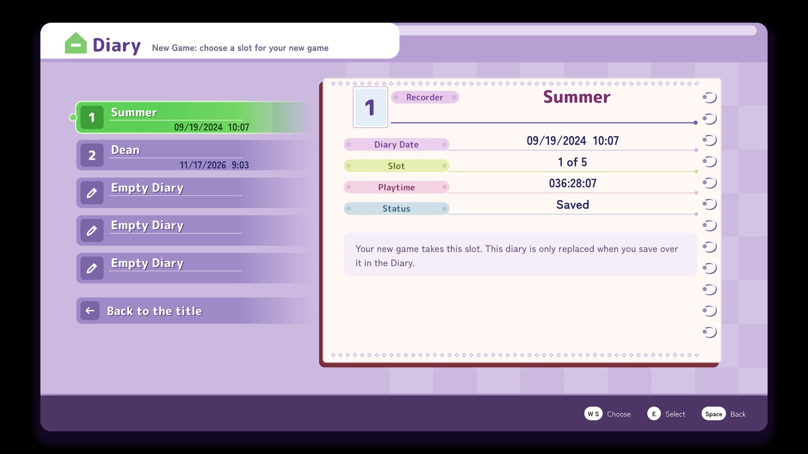

On the Switch, the game has room for just one save, plus an autosave. Here the Diary has five save slots, shown as five rows like the game's own, with the Autosave (your latest play) under them. On the title, Up and Down (or the mouse wheel) move through the rows; the newest is chosen when the Diary opens. An empty slot has nothing to load. New Game asks which slot your game goes in, in the Diary's look, and asks again before it replaces a save; Back to the title leaves without starting one. A save is only replaced when you save your new game over it in the Diary. X twice on the title's Continue deletes one (the X key on a keyboard, Square on a PlayStation controller).
- Slots
- 5, and one Autosave
- Your old save
- Slot 1
- Record
- decision 0078
